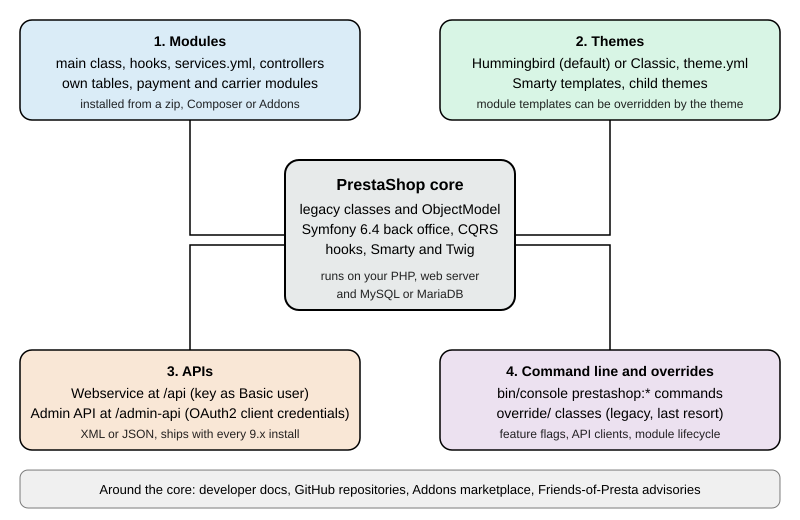

PrestaShop Overview
|
This content was generated with the assistance of AI and should be verified against the official documentation before being relied on in production. |
This subsection documents how to build on PrestaShop, the open source e-commerce application written in PHP. It was written against PrestaShop 9.2.0 (released 2026-09-30), which ships Symfony 6.4.46, Smarty 4.5.7, Twig 3.27.1, Doctrine ORM 2.20.0, API Platform 3.4.17, the Hummingbird 2.1.2 default theme and the Classic 3.1.2 theme. The official Docker image of that release runs PHP 8.5.12 on Apache 2.4.68. Every fact was checked on 2026-10-27. The older 8.2.8 line (security-only extended support) is mentioned wherever a project still on it would behave differently, and the Versions and Support page explains which line to pick. Unlike a hosted service, PrestaShop is software you install and operate yourself, so the facts on these pages depend on the version you run rather than on the date you read them.
This page explains what PrestaShop is, how it is organised and licensed, the four surfaces a developer builds on, the project resources around it, how the pages of this subsection fit together as a learning path, and then lists every page. It is the entry point of the PrestaShop subsection of the E-commerce section.
What PrestaShop is
PrestaShop is a self-hosted shop engine. You (or your hosting provider) run a web server, PHP and a MySQL or MariaDB database, install the software into a folder, and from then on you own everything that runs: the code, the data, the back office, the updates and the security of the server. The catalogue, cart, checkout, orders, customers, carriers, taxes, currencies, languages, SEO settings and a back office to manage them ship in the core. Payments, analytics, marketing and most integrations arrive as modules.
That model has four consequences that shape the pages in this subsection.
-
You can change the code. The whole application is open source. You can write modules that hook into any page, replace the theme, call two APIs, or (as a last resort) override core classes. The price is that nothing stops two extensions from fighting each other, so conventions matter: the Hooks, Module Basics and Module Upgrades, Overrides and Decoration pages are central.
-
Updates are your job. A new release does not reach your shop on its own. You decide when to update the core, the modules and the theme, and when you do not, known vulnerabilities stay in your shop. The Security page and the Testing, Upgrades and Addons page cover this.
-
Two code generations live side by side. PrestaShop began in 2007 as a procedural-style application built on classes such as
ProductandCart(the "legacy" layer, withObjectModelentities and Smarty templates). Since 1.7 the back office has been migrated page by page to Symfony, with Twig templates, Doctrine, CQRS commands and queries and Symfony services. 9.x runs Symfony 6.4 LTS (8.x ran Symfony 4.4). Most real modules touch both layers, which is why the Architecture page maps them. -
Hosting decides performance and risk. The same shop is fast or slow, safe or exposed depending on PHP settings, caches, the web server rules and the hosting. The Installation and Local Environments and Performance and Caching pages describe what you control.
For market context, W3Techs reports PrestaShop at 2.8% of the sites whose e-commerce system it can detect and at 0.5% of all sites (checked 2026-10-27), and Store Leads counted 144,665 live PrestaShop stores against a peak of 220,112 in the third quarter of 2022. In the Web Almanac 2025 data PrestaShop powers 3.7% of the mobile e-commerce sites measured.
Licence and governance
The core software is licensed under the Open Software License 3.0 (OSL-3.0): the licence text is installed in
docs/licenses/LICENSE.txt of every shop, and the headers of the native modules that ship with the release cite the
Academic Free License 3.0 (AFL-3.0). Both are OSI-approved open source licences that allow commercial use and
modification; OSL-3.0 also carries reciprocal terms for distributed derivative works, so read the licence text before
you distribute a modified core.
Since 2022 the PrestaShop project has been run as a company-neutral open source project with a public lifecycle and a public repository, while PrestaShop SA (the company that founded it) keeps sponsoring parts of the ecosystem, such as paid technical support and the PrestaShop Academy. The distribution changed shape with 9.0: instead of one zip on GitHub and a later one on prestashop.com, versions from 9.0 on are released as a single zip hosted on prestashop.com, and the GitHub release pages no longer carry a build.
The back office and the front office
A PrestaShop shop has two web applications over one database. The front office is the storefront that shoppers see,
rendered by the active theme. The back office lives in a folder with a random name (for example
admin867rtqhwnkf2hocbvsx in the test install used while writing these pages) so that automated scanners cannot guess
its address, and merchants and developers manage products, orders, modules, themes and settings there. Both share the
same models and hooks. Separately, the Webservice (/api) and the newer Admin API (/admin-api) expose data to
other programs, and bin/console exposes administration tasks on the command line.
The four customization surfaces
PrestaShop’s own documentation lists four ways to customize it: themes, modules, hooks and overriding. In practice the useful grouping for a developer is the one below, because APIs and the command line are first-class surfaces in 9.x and hooks are the way modules and themes reach into the core.

| Surface | What you write | Where it runs | Main pages |
|---|---|---|---|
Modules |
A PHP class extending |
Inside the shop, on your server. Hooks call the module at fixed points of every page. |
|
Themes |
A folder in |
Inside the shop, rendered on each front-office request. Merchants can switch themes in the back office. |
|
APIs |
HTTP clients for the Webservice ( |
Your own application, calling the shop over HTTP. Module authors can add API resources. |
|
Command line and overrides |
|
On the server, as the web server user. Overrides are part of the running shop. |
Modules and hooks
A module is the unit of extension. It adds features to the shop, displays extra content, or connects to other
services: payment platforms, carriers, marketing tools. PrestaShop 9.2.0 installs about 80 modules out of the box (80
on the clean CLI install used for these pages), among them the checkout, analytics, search and contact modules, and the
Ask AI and One Page Checkout modules that are new in 9.2. A hook is a named point in the code (for example
displayHeader on every page, displayProductAdditionalInfo on a product page, or actionValidateOrder when an order
is created) where PrestaShop calls every module registered for that name. Display hooks return HTML, action hooks react
to an event. The ps_hook table of the 9.2.0 test shop holds 1,251 hooks, 1,069 of them named action* and 151
display*.
Themes
A theme controls the look of the front office. 9.x ships two. Hummingbird (2.1.2) is the default for new installs since 9.1: it is built on Bootstrap 5.3.3, written without jQuery, uses BEM class names and aims at accessibility. Classic (3.1.2) is the long-standing theme on Bootstrap 4 and is deprecated for new development. Both use Smarty templates. A theme can override the templates of modules by file path.
APIs
PrestaShop has two HTTP APIs. The Webservice is the old one: resources such as products, orders and customers under
/api/, authenticated with a key created in the back office, with permissions per resource and verb, and XML as the
default format (JSON with output_format=JSON). The Admin API arrived in 9.0, is built on API Platform, speaks JSON and
uses the OAuth2 client credentials grant: an API client with scopes such as product_read exchanges its id and secret
for a bearer token at /admin-api/access_token. The Admin API documentation carries no "stable" label and its OpenAPI
document declares version 0.1.0, so treat it as an API that is still maturing.
The command line
bin/console is a Symfony console with 28 PrestaShop commands in the prestashop: namespace on 9.2.0: module
lifecycle (prestashop:module, prestashop:module:list), feature flags, configuration values, API clients, theme
switching, the .htaccess generator, linters and CQRS introspection.
The project ecosystem
The software is the visible part of a wider ecosystem, and most of what you need to know about a version lives outside the repository that holds the code. The table lists the resources used throughout these pages.
| Resource | What it is | Notes |
|---|---|---|
The official developer guide: installation, architecture, CQRS, modules, themes, Webservice, Admin API, testing. One tree per major version ( |
Sources are in the |
|
The merchant guide: back office, catalogue, orders, settings. |
Redirects to a version picker. |
|
Release cycle, security policy, bug bounty, news such as the 9.2.0 announcement and the 8.2 extended-support policy. |
The blog is where release notes and policy changes appear first. |
|
The core repository (releases, issues, security advisories, security policy) and the Hummingbird theme. |
The core repository lists 61 security advisories on 2026-10-27. |
|
The official Docker images (Apache and PHP-FPM variants) and their README. |
|
|
The official marketplace for paid and free modules, themes and services. Modules sold there go through a technical validation. |
The site answers automated requests with HTTP 403, so its content could not be checked while writing these pages. |
|
The online tool that checks a module before submission to Addons. |
Requires an account. |
|
A community project that publishes advisories, mostly about third-party modules (230 posts on 2026-10-27). |
Complements the advisories of the core repository. |
|
Results of the automated test campaigns on daily builds. |
Built daily core packages are in the public bucket |
Community help comes from GitHub discussions, the forums run by PrestaShop SA, Stack Overflow (5,807 questions tagged
prestashop on 2026-10-27) and the project’s Slack. The project itself offers no warranty or dedicated support: the
software is provided as is, and professional help comes from agencies and freelancers.
Source: PrestaShop project: Get help
What’s covered
Foundation
-
Versions and Support: release timeline, support policy, PHP and Symfony matrix and the 8 to 9 decision.
-
Installation and Local Environments: web installer,
index_cli.php, the official Docker image, Nginx and Apache, post-install security and moving servers. -
Back Office and Store Setup: catalogue, carriers, taxes, currencies, payments, employees, SEO settings, maintenance mode and a launch checklist.
Architecture
-
Architecture: legacy ObjectModel versus Symfony, kernels, the
src/layout and feature flags. -
CQRS and Domain: commands, queries, handlers, buses, DTOs and value objects.
-
Grid and Forms: grid definitions, filters, Symfony forms and settings forms.
Modules
-
Module Basics: structure, main class, install and uninstall,
config.xml, naming rules and Composer. -
Hooks: display and action hooks, registration,
Hook::exec, custom hooks and the 9.x changes. -
Module Configuration:
HelperFormversus modern configuration pages,Configurationand multistore. -
Module Services and Admin Controllers:
services.ymlvariants,PrestaShopAdminController, routes, security attributes and tabs. -
Front Controllers and Templates:
ModuleFrontController,getModuleLink, Smarty and Twig, theme overrides of module templates. -
Module Translations: the new and classic systems, domains and XLF export.
-
Module Upgrades, Overrides and Decoration: upgrade scripts, overrides and their alternatives, service decoration.
-
Database and Entities:
Db,DbQuery, customObjectModelentities, Doctrine and Extra Properties.
Commerce features
-
Catalog and Pricing: products, combinations, specific prices, taxes, cart rules and the new discount system.
-
Cart, Checkout and Orders: the cart, the checkout process, One Page Checkout, order states and multi-shipment.
-
Payment and Carrier Modules:
PaymentModule,PaymentOption,validateOrderand carrier modules. -
Customers, Multistore and i18n: customers and groups, the multistore context, languages, currencies and CMS pages.
Themes and APIs
-
Themes: Hummingbird and Classic:
theme.yml, layouts, template inheritance, assets, child themes and theme design practice. -
Webservice API: keys, permissions, formats, filters and extending the Webservice.
-
Admin API: OAuth2 client credentials, scopes, curl examples and module API resources.
-
CLI Commands:
bin/console prestashop:*, feature flags and API clients.
Production and reference
-
Performance and Caching: production mode, Smarty cache, CCC, cache backends, OPcache, web server and CDN tuning.
-
Security: advisory history, third-party module risk, secure coding rules, hardening and reporting.
-
Testing, Upgrades and Addons: linting, static analysis, PHPUnit, Behat, UI tests, the Update Assistant and Addons validation.
-
Cheat Sheet (PDF): a one-page summary with a downloadable PDF.
Cloud deployment
-
Cloud: Reference Architecture: identical pods behind a load balancer and CDN, where each kind of PrestaShop state goes and the services that fill each tier.
-
Cloud: Managed Database (RDS and Aurora): RDS and Aurora, parameters.php from the environment, TLS to the database and connection sizing.
-
Cloud: Production Container Image: the production image for Kubernetes: the official entrypoint, a renamed admin folder, baked modules and theme, OPcache.
-
Cloud: Shared Media and Writable Paths: the folders PrestaShop writes to and which ones go on a shared EFS volume.
-
Cloud: Cache, Sessions and the Back Office in a Cluster: per-pod caches, the SQL cache on Memcached, sessions in Valkey and the encrypted cookie keys.
-
Cloud: EKS Infrastructure and Helm Deployment: a validated OpenTofu module and Helm chart for PrestaShop on EKS.
-
Cloud: Releases and Upgrades: module upgrades as a Helm pre-upgrade Job, core upgrades as an image rebuild and maintenance mode on a cluster.
-
Cloud: Autoscaling, Observability, Backups and Security: autoscaling, PHP-FPM metrics, logs, backups and restore drills, WAF rules and security.
-
Cloud: Migrating from a Single Server: moving a shop to EKS, RDS and EFS: dump or DMS, files, domain and cutover.
-
Cloud: Google Cloud, Azure and Alternatives: GKE and AKS equivalents, and ECS, Cloud Run, Container Apps and virtual machine options.
What this subsection could not run
Everything marked as run in these pages was executed on a local PrestaShop 9.2.0 test shop created from the official Docker image on 2026-10-27, with PHP 8.5.12, Apache 2.4.68 and MySQL 8.4.13. The following were documented from the official sources and not executed: the Update Assistant (it is not bundled in the 9.2.0 image and there was no earlier version to update from), the Addons marketplace and validator (both need an account or reject automated requests), building the Hummingbird or Classic themes from source (it needs Node.js 24, which was not installed), Playwright UI tests, multistore end to end, the One Page Checkout and multi-shipment flows (their feature flags are off by default), and the AI features, which need a provider key. The Windows and macOS local stacks (XAMPP, MAMP, WampServer) were not run either.
Reading path
The pages are ordered so that each depends only on earlier ones. Pick the track that matches the job, but read the foundation first.
Typical routes: a merchant’s technical lead reads stages 1 and 4 and the production pages, and keeps the cheat sheet nearby; a module developer reads stages 1 to 4 and then testing; a theme developer reads stages 1, 2 and the themes page, then the module pages that explain which hooks a theme exposes; an integrator reads stage 1, the Webservice and Admin API pages and the security page; a team moving to Kubernetes on AWS reads stage 1, the production pages and then the cloud pages in order. Some knowledge outside this subsection helps: PHP and Composer (see the PHP section), Symfony concepts, OAuth for the Admin API (see OAuth) and Docker for the local environment (see Docker).
Running example
All pages share one invented shop, Pocket Coffee, a small specialty-coffee seller. It has a "Single-origin beans"
product with three options (origin, grind and size) giving 18 combinations and SKUs such as PC-ETH-WHL-250, a "Starter
kit" product, a Coffee Club customer group with 10% off beans, free shipping above 40 EUR in Spain, a flat 9.90 EUR rate
for the rest of the European Union, and Spanish and English storefronts. On PrestaShop it is built with the pieces below,
and each page builds its own part.
| Pocket Coffee need | Built with |
|---|---|
A running shop to develop against |
Web installer, CLI installer or Docker, see Installation and Local Environments |
Products with combinations, categories, Spain and EU shipping zones, taxes |
Back-office setup, see Back Office and Store Setup and Catalog and Pricing |
Coffee Club group and its 10% discount on beans |
Customer groups and cart rules, see Customers, Multistore and i18n and the catalog page |
Spanish and English, EUR and USD |
Languages, currencies and translations, see Customers, Multistore and i18n and Module Translations |
Roast date badge on the product page |
A module hooked to |
"Order placed" log |
A module hooked to |
Reading products and creating an order from outside |
The Webservice and the Admin API, see Webservice API and Admin API |
A first look at each surface
The short examples below show one real file or request from each surface. They were run against a local PrestaShop 9.2.0 test shop (the official Docker image with a MySQL 8.4 database); the pages in the map below develop each of them. The key, client id and secret are placeholders for the throwaway values of that test shop.
The command line
bin/console runs as the web server user from the shop root. In the official Docker image that user is www-data and
the shop is in /var/www/html.
docker exec -u www-data -w /var/www/html prestashop php bin/console --version
docker exec -u www-data -w /var/www/html prestashop php bin/console prestashop:module:list --simple | head -5The first command printed PrestaShop 9.2.0 with Symfony 6.4.46 (env: dev, debug: true) and the second printed the
technical names blockreassurance, blockwishlist, contactform, dashactivity and dashgoals, one per line. The
--simple flag of prestashop:module:list is new in 9.2; without it the command prints a table with name, version and
status.
A module
The roast date badge is a small module in modules/pcfaroast/. It registers the product-page hook
displayProductAdditionalInfo when it is installed and, when the hook runs, looks for a product feature called
"Roast date" and renders it from a Smarty template. The class name is the technical name with a capital first letter,
the folder, the main file and $this->name match, and index.php files protect every folder (they are omitted below).
<?php
declare(strict_types=1);
if (!defined('_PS_VERSION_')) {
exit;
}
class Pcfaroast extends Module
{
/** Name of the product feature that holds the roast date. */
private const FEATURE_NAME = 'Roast date';
public function __construct()
{
$this->name = 'pcfaroast';
$this->tab = 'front_office_features';
$this->version = '1.0.0';
$this->author = 'Pocket Coffee';
$this->need_instance = 0;
$this->ps_versions_compliancy = ['min' => '9.0.0', 'max' => '9.99.99'];
parent::__construct();
$this->displayName = $this->trans('Roast date badge', [], 'Modules.Pcfaroast.Admin');
$this->description = $this->trans('Shows the roast date of a coffee on the product page.', [], 'Modules.Pcfaroast.Admin');
}
public function isUsingNewTranslationSystem(): bool
{
return true;
}
public function install(): bool
{
return parent::install()
&& $this->registerHook('displayProductAdditionalInfo');
}
public function hookDisplayProductAdditionalInfo(array $params): string
{
$idProduct = (int) $params['product']['id_product'];
$idLang = (int) $this->context->language->id;
foreach (Product::getFrontFeaturesStatic($idLang, $idProduct) as $feature) {
if ($feature['name'] === self::FEATURE_NAME) {
$this->context->smarty->assign('pcfaroast_date', $feature['value']);
return $this->fetch('module:pcfaroast/views/templates/hook/badge.tpl');
}
}
return '';
}
}The template is views/templates/hook/badge.tpl:
<p class="pcfaroast-badge">
{l s='Roasted on' d='Modules.Pcfaroast.Shop'}: {$pcfaroast_date|escape:'html':'UTF-8'}
</p>This example was run. php -l reported no syntax errors, bin/console prestashop:module install pcfaroast printed
"Install action on module pcfaroast succeeded." and registered the hook in ps_hook_module, and after a product was given
a "Roast date" feature with the value 2026-10-20 the demo product page contained
<p class="pcfaroast-badge">Roasted on: 2026-10-20</p>. The feature and its value were created for the test with the
legacy Feature and FeatureValue classes in a throwaway script, and the module, the feature and the value were removed
afterwards. A shop admin creates the same feature under Catalog > Features in the back office.
The Webservice
The Webservice is switched on in the back office (Advanced Parameters > Webservice) with a key that carries permissions
per resource. The key is sent as the user name of HTTP Basic authentication with an empty password, and
output_format=JSON selects JSON instead of XML.
curl -s -u "${PS_WEBSERVICE_KEY}:" \
"http://localhost:8080/api/products/1?output_format=JSON"The test key was allowed to read products and returned the product with id 1 (reference demo_1, price 23.900000,
active). The same request for a resource without permission returned HTTP 401. URL rewriting must be active
because /api is routed to webservice/dispatcher.php by a rewrite rule.
The Admin API
The Admin API first needs an API client (Advanced Parameters > Admin API, or bin/console prestashop:api-client create)
with the scopes it may use. The client exchanges its id and secret for a short-lived bearer token (expires_in was 3600
seconds), then calls resources under /admin-api.
TOKEN=$(curl -s -X POST http://localhost:8080/admin-api/access_token \
-d grant_type=client_credentials \
-d client_id="${PS_API_CLIENT_ID}" \
-d client_secret="${PS_API_CLIENT_SECRET}" \
-d scope=product_read | jq -r .access_token)
curl -s -H "Authorization: Bearer ${TOKEN}" \
"http://localhost:8080/admin-api/products?limit=1"The token request returned a JSON Web Token and the product request returned totalItems, limit and an items array
whose entries have the keys productId, enabled, name, quantity, priceTaxExcluded, priceTaxIncluded and
category. Over plain HTTP the API answers Use HTTPS protocol unless the API kernel runs in debug mode and the
configuration PS_ADMIN_API_FORCE_DEBUG_SECURED is off, which was the case in the local test shop only. The test run parsed the
JSON with Python because jq was not installed on the test machine.
Bibliography
Books
The books below were consulted for the topics they cover and rewritten for the current platform version; where a book describes an older release, the pages say so. No text, listing or figure is copied from them, and on any discrepancy the official documentation wins. Publisher pages that refused automated requests are marked (unverified); the ISBN, title, author and year were cross-checked against Open Library and Crossref.
-
Arnaldo Pérez Castaño, PrestaShop Recipes, Apress, 2017, ISBN 978-1-4842-2573-8: publisher page (unverified).
-
Hayati Hashim, PrestaShop 1.3 Theming Beginner’s Guide, Packt, 2010, ISBN 978-1-84951-172-8: publisher page (unverified).
-
Jose A. Tizon and John Horton, PrestaShop 1.5 Beginner’s Guide, Packt, 2013, ISBN 978-1-78216-106-6: publisher page (unverified).
The full cited-URL bibliography of the E-commerce section is on the E-commerce section page; the online sources of this subsection are under References.
References
Cloud deployment
The sources below were consulted for the cloud deployment pages; each entry links to its official website.
PrestaShop
Amazon Web Services
-
Amazon CloudWatch: Container Insights with the CloudWatch Observability add-on
-
Amazon ElastiCache User Guide: Authenticating with the Valkey and Redis OSS AUTH command
-
Amazon ElastiCache User Guide: Auto Discovery with Memcached
-
Amazon ElastiCache User Guide: Engine versions and upgrading
-
Amazon RDS User Guide: Importing data into a MySQL DB instance
-
Amazon RDS User Guide: Password management with Secrets Manager
-
Amazon RDS User Guide: Restoring a DB instance to a specified time
-
AWS DMS User Guide: Using a MySQL-compatible database as a source
-
Using SSL/TLS to encrypt a connection to a DB instance or cluster